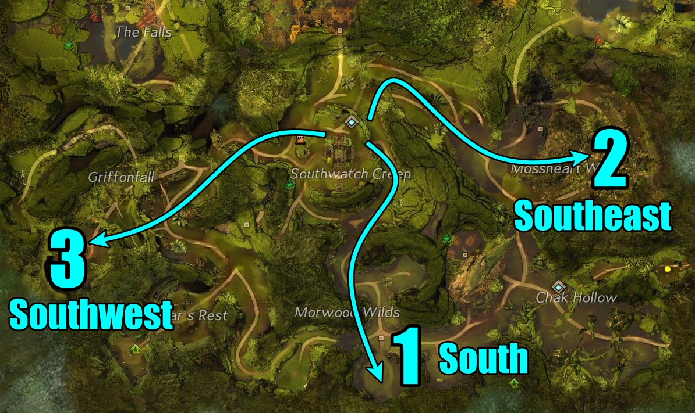
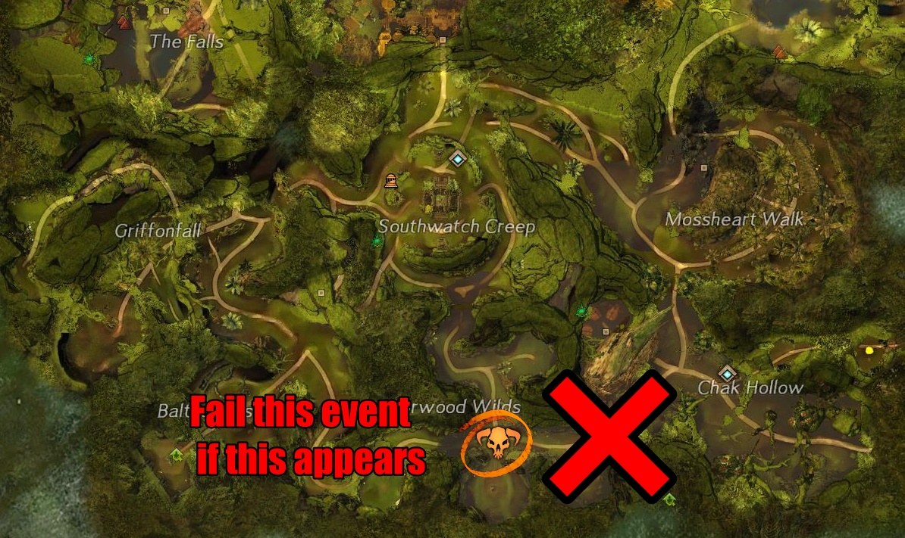
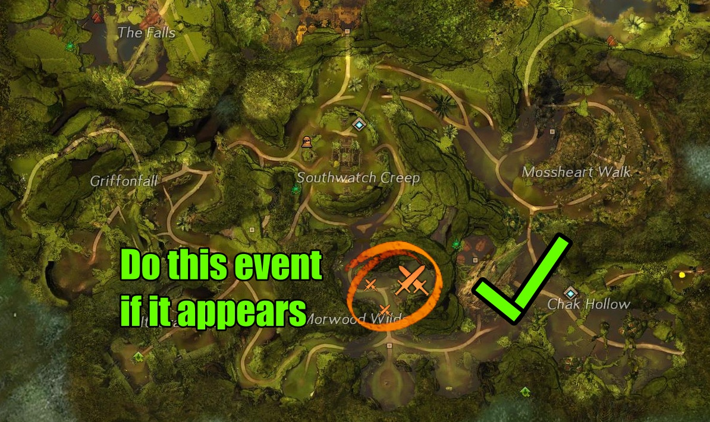
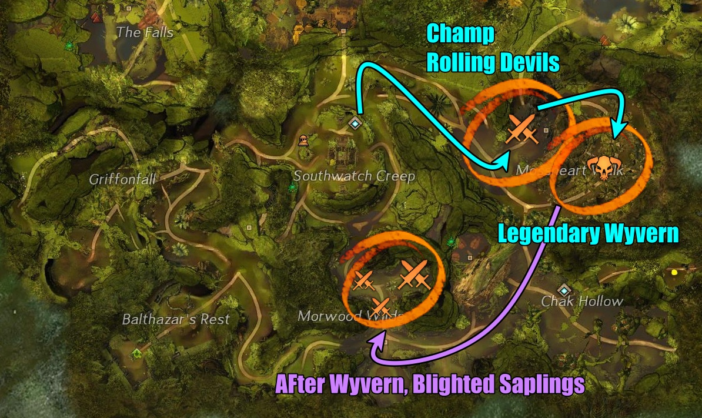
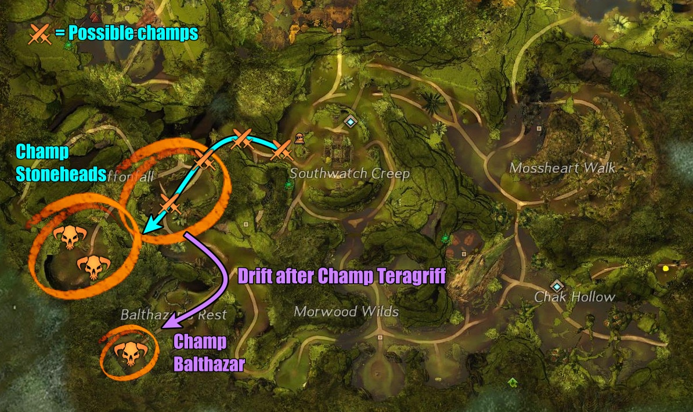
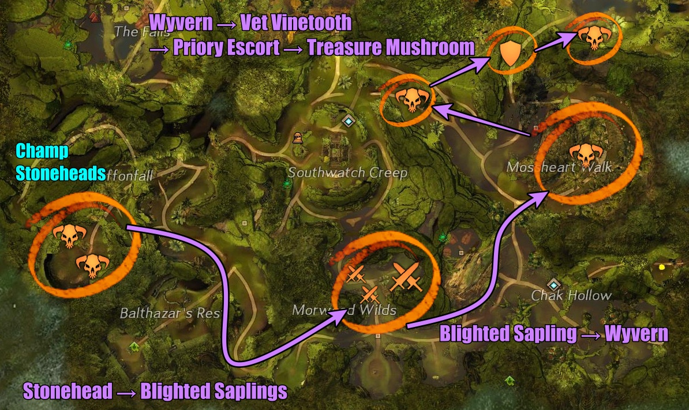
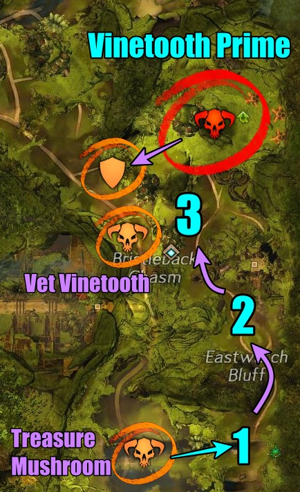
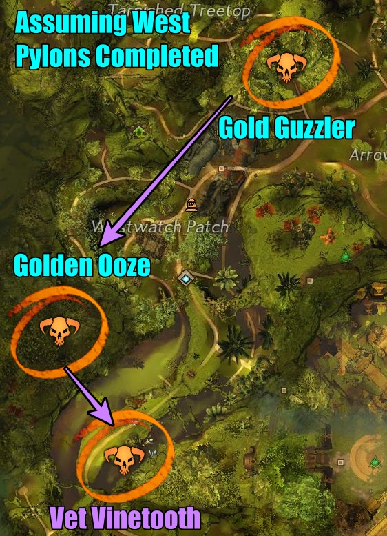
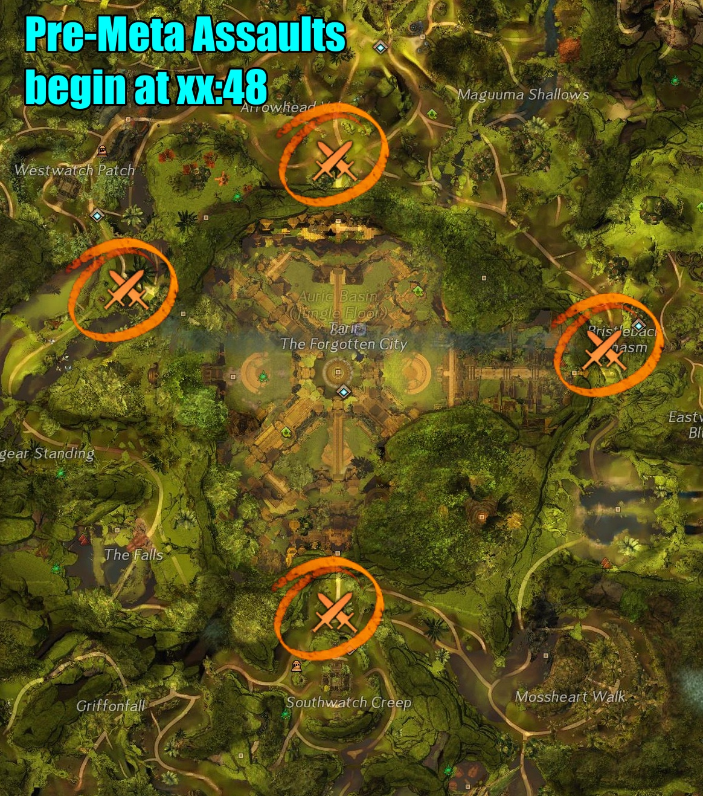

Auric Basin

How to:
- 75 minutes of pylon events/other independent events
- 20 minutes of meta/gathering chests
Throughout the train
There are 4 Veteran Vinetooths that are at cardinal point of the map near each waypoint. When there's extra time, there are Priory Escorts that also occur. During the train, it is great to stop for a moment to poke those events for extra loot + Shiny Baubles.
Start of the train
I start with the south pylon events. Unlike the other pylons events, south has 3 event chains that can also upscale into champions: southwest pylon, south pylon, and southeast pylon. The priority of these events is south → southeast → southwest.

South pylon chain is great because it's quick and summons an event called, "Destroy the feeder to prevent the blighted sapling from producing Mordrem". This event occurs 3 times, both during the main event chain and after the southern pylon has been activated. It is important to note that once the pylon has been activiated, there is a champion event called, "Prevent Blight [name] from reaching the blighted saplings". In order to spawn the 3 events again, this event must fail. Otherwise, it will spawn this single champion event. If someone does do the event, another similar event will spawn and let it also fail until the 3 blighted sapling events spawn. Use my timer page to help with the time for when it spawns.


For the next pylons, keep track of the timer for the Blighted Saplings event. You can check the progress in-game(if you're still doing south pylons), but checking if there's a champion symbol or a regular event symbol at the southern pylon.
Southeast pylon chain is great too because it's also quick. The first escort may seem a little unncessary, but otherwise, the other events are very fast. There will be many champions from Rolling Devils during the event where you have to destroy debris. After activating the southeast pylon, the Legendary Wyvern can respawn. Use my timer page to help with the time for when it spawns. Also after the pylon, if no one has completed the Blighted Champion event, the Blighted Sapling events should be up.

Southwest pylon chain is mostly great. It is mostly quick escorts with many champions and small events. But the last event where you have to destroy two champion stoneheads, it can be a mess without great CC and DPS. After defeating the Champion Teragriff event, the Balthazar HP's champion does count as an event. This is an extremely squishy champion, but does need to die before finishing it's channel to where it wipes everyone. Do this HP for an extra champion bag and boost in map rewards. Run back to the main event chain after the HP. After the southwest pylon, if no one has done the Blighted Champion event, the Blighted Sapling events should be up.


Post South Pylons → East Pylons
While waiting for the 3 Blighted Sapling events and Legendary Wyvern to respawn, I go to east pylons. This is generally very slow events, BUT a lot of PUGs need Vinetooth Prime. This is more of a personal choice for me to do to help folks get their achievements + masteries done while making some profits. If you prefer to just get purely more events, avoid these pylons.
In between each east pylon, check the timers for the Blighted Saplings. Since these events take a long time to complete, it is possible to drift off for a bit before Vinetooth to hit the south events.
East pylon #1 (south-most): Kill vine tenders in 3 locations on the cliffs above, then DPS the breecher. After completing this chain and assuming the Blighted champion event failed, I like to drift the squad back to southwatch to kill the 3 Blighted Sapling events then head back to the next east pylon.
East pylon #2 (mid): CC mobs until the NPC finishes channeling.
East pylon #3 (north): Kill snipders ASAP so the NPC can capture the rally points.
After all the east pylons, prep the squad with CC and DPS for Vinetooth Prime. If you can break the CC bar, this event will finish extremely quick. If not, this will be a long event, but can be completed with pure DPS (not preferred).
After Vinetooth Prime, there could be a Priory Escort or Veteran Vinetooth nearby.

Post East Pylons
This part is very impromtu. If I know someone needs west pylon events, I'll do them. If none of the west pylon are done, then I won't do them because there's probably not enough time at that point. If all of the pylons are done, then I'll do the events that do respawn such as the Golden Ooze or Gold Guzzler.

Otherwise, I continue doing any Veteran Vinetooths, the south Blighted Sapling events, and any Priory Escorts laying around until 15 minutes prior to meta.
15 Minutes til Meta (Pre-Meta Phase)
Note: All events relating to pylons will disappear. Only independent events such as the Veteran Vinetooth and Priory EScorts will remain active
There are 4 pre-events that spawn before the main event. Excluding the challenges, there are assaults that happen in front of each cardinal gate. I like to sit at the north side because if the west pylons were completed, then a champion Arrowhead appears every 1 minute and 30 seconds. The pre-events themselves are waves of Mordrem that can spawn multiple champions. If the squad is quick, you can take the wallow next to the gates to the opposite side to quickly tag another event.

If there's extra time and the map is already organized, a few HPs, Veteran Vinetooth, or Priory Escorts can fill the gap until meta. Just make sure the map is prepared otherwise people will freak out..y'all know how Auric Basin is!